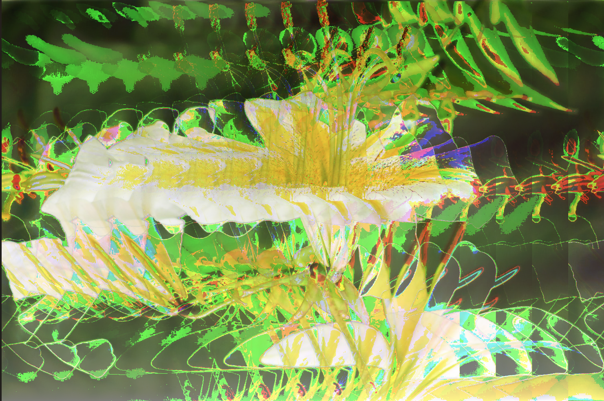
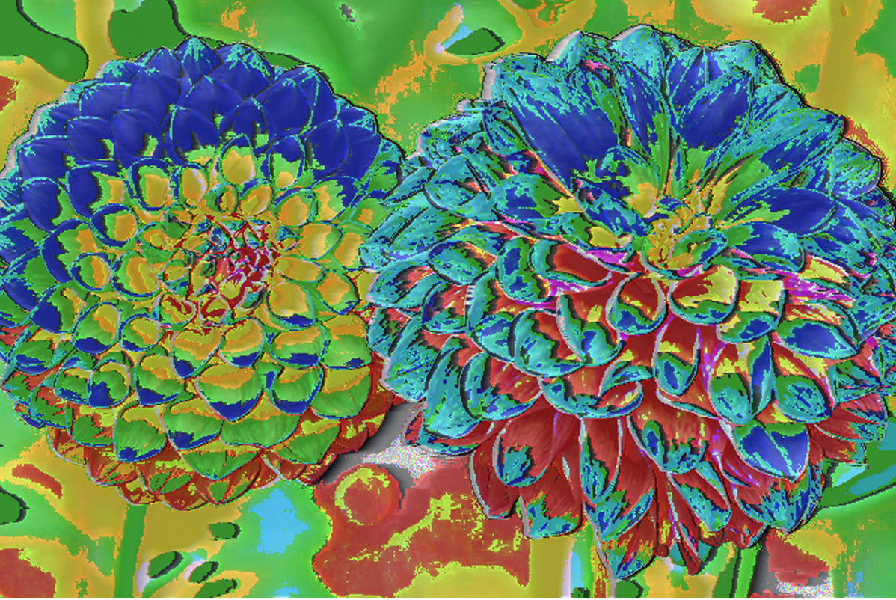
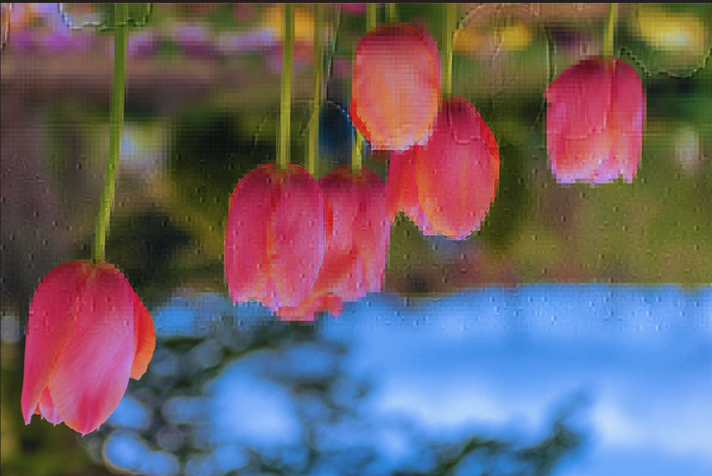

Using Photoshop and a text-editing software Notepad++, I altered some images I found on the web.
Being named Lillian, I usually get called Lilly, which gave me the idea to glitch the same image of Lillies over and over again. As the idea progressed, I decided it would be more interesting to glitch several of my favorite flowers, as a commentary on growth and change. In the same thread, what we stand to lose with climate change or a nuclear war, how flowers could mutate as a product of their surroundings.